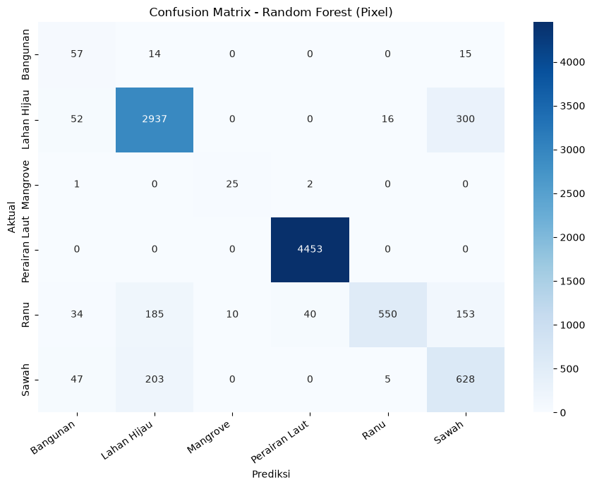

UTS : Sistem Informasi Geografis Menggunakan Piksel#
Klasifikasi Tutupan Lahan (LULC) Provinsi Jawa Timur Menggunakan Citra Sentinel-2A#
1. Business Understanding#
1.1 Latar Belakang#
Provinsi Jawa Timur merupakan salah satu pusat pertumbuhan ekonomi dan lumbung pangan nasional. Dinamika pembangunan yang pesat memicu terjadinya konversi tutupan lahan secara masif, seperti alih fungsi lahan pertanian (sawah) menjadi area pemukiman atau industri, serta menyusutnya luasan kawasan lindung seperti hutan mangrove di pesisir.
Pemantauan perubahan tutupan lahan (Land Use and Land Cover / LULC) menggunakan survei lapangan konvensional memakan biaya besar, waktu yang lama, dan cakupan spasial yang terbatas. Di sisi lain, pemerintah daerah memerlukan data pemetaan yang aktual untuk mengevaluasi Rencana Tata Ruang Wilayah (RTRW) dan merumuskan kebijakan tata ruang yang berwawasan lingkungan. Oleh karena itu, diperlukan sebuah pendekatan otomatis berbasis Sistem Informasi Geografis (SIG) yang dipadukan dengan kecerdasan buatan (Machine Learning) untuk memetakan kondisi lahan secara cepat, akurat, dan luas.
1.2 Tujuan#
Proyek analisis spasial ini memiliki beberapa tujuan utama:
Otomatisasi Pemetaan Lahan: Mengklasifikasikan 6 (enam) kelas tutupan lahan di Jawa Timur secara otomatis menggunakan data citra satelit Sentinel-2A.
Evaluasi Algoritma: Mencari dan mengimplementasikan algoritma Machine Learning dengan akurasi tertinggi untuk membaca pola spektral penggunaan lahan.
Mendukung Kebijakan Spasial: Menyediakan peta digital aktual yang dapat digunakan sebagai instrumen evaluasi kebijakan tata ruang dan ketahanan pangan (luasan sawah).
Pengembangan Sistem Interaktif: Men-deploy hasil pemodelan ke dalam aplikasi Web interaktif (Streamlit) dan dokumentasi komputasi web statis (Jupyter Book) agar mudah diakses oleh para pemangku kepentingan untuk memenuhi tugas UTS matakuliah Proyek Sains Data.
2. Data Understanding#
2.1 Data Collecting#
Data yang digunakan dalam analisis ini bukanlah gambar biasa, melainkan data reflektansi spektral yang diekstrak dari Citra Satelit Sentinel-2A Level-2A. Proses akuisisi (data collecting) dilakukan melalui antrean komputasi cloud (Batch Job) di server Copernicus Data Space Ecosystem (OpenEO). Citra yang diambil merupakan komposit nilai median dari rentang waktu observasi 01 Agustus 2026 hingga 31 Agustus 2026, yang bertujuan untuk menghilangkan gangguan noise dan tutupan awan di wilayah Jawa Timur.
Total Keseluruhan data yang diambil adalah:
Kelas 'Sawah': 20 poligon
Kelas 'Bangunan': 20 poligon
Kelas 'Lahan Hijau': 20 poligon
Kelas 'Mangrove': 20 poligon
Kelas 'Ranu': 20 poligon
Kelas 'Perairan Laut': 20 poligon
Jumlah sampel piksel total: 232120
Jumlah piksel per kelas:
Perairan Laut 205465
Lahan Hijau 20092
Sawah 3181
Bangunan 1679
Ranu 1579
Mangrove 124
2.2 Deskripsi Dataset dan Label Kelas#
Eksperimen ini menggunakan total 120 data titik sampel koordinat yang didistribusikan secara proporsional ke dalam 6 kelas (masing-masing 20 titik/sampel). Penentuan kelas Klasifikasi Penutup Lahan yang telah disesuaikan dengan lanskap Jawa Timur:
Sawah: Area lahan basah pertanian.
Bangunan: Area terbangun, pemukiman, dan infrastruktur padat.
Lahan Hijau: Vegetasi non-pertanian, hutan daratan, atau ruang terbuka hijau.
Mangrove: Vegetasi payau di sepanjang pesisir (utara/selatan laut Jawa Timur).
Ranu (Danau): Badan air tawar tertutup yang tersebar di wilayah Jawa Timur.
Perairan Laut: Wilayah perairan laut lepas.
Dataset dibagi dengan rasio 80:20, yaitu 240 sampel untuk melatih (training) algoritma pembelajaran mesin dan 60 sampel untuk menguji (testing) akurasinya.
2.3 Ekstraksi Fitur#
Dataset tabular dibentuk dari ekstraksi 7 fitur utama per piksel citra, yang terdiri dari 5 band spektral dan 2 indeks transformasi:
A. Band Spektral Sentinel-2A:
B02 (Blue - 490 nm): Sensitif terhadap pantulan perairan dangkal dan deteksi aerosol atmosfer.
B03 (Green - 560 nm): Menangkap puncak pantulan hijau dari klorofil dedaunan.
B04 (Red - 665 nm): Menyerap klorofil secara kuat; parameter utama dalam mengidentifikasi tingkat kepadatan vegetasi.
B08 (NIR / Near-Infrared - 842 nm): Sangat sensitif terhadap struktur biomassa sel daun. Memiliki nilai yang sangat tinggi pada vegetasi hijau dan diserap habis (nilai 0) pada badan air.
B11 (SWIR / Shortwave-Infrared - 1610 nm): Digunakan secara khusus untuk mendeteksi tingkat kelembapan (kandungan air) pada permukaan tanah dan tajuk vegetasi.
B. Indeks Transformasi (Rumus Spektral):
Untuk mempermudah algoritma dalam mengenali pola, fitur spektral dasar dikalkulasikan ke dalam dua metrik indeks matematis:
NDVI (Normalized Difference Vegetation Index) Mengukur tingkat kehijauan, kerapatan, dan kesehatan vegetasi.
Rumus:
\[NDVI = \frac{B08 - B04}{B08 + B04}\]NDWI (Normalized Difference Water Index) Mendeteksi fitur kebasahan dan badan air secara tegas, sembari meminimalisir efek pantulan dari tanah maupun vegetasi terrestrial.
Rumus:
\[NDWI = \frac{B03 - B08}{B03 + B08}\]NDBI (Normalized Difference Built-up Index)
Digunakan khusus untuk mengidentifikasi dan memetakan area terbangun, pemukiman, serta infrastruktur (kelas Bangunan) dengan memanfaatkan pantulan spektral yang tinggi pada gelombang Shortwave Infrared (SWIR) dibandingkan Near-Infrared (NIR).
Rumus:
\[NDBI = \frac{B11 - B08}{B11 + B08}\]MNDWI (Modified Normalized Difference Water Index)
Penyempurnaan dari indeks air konvensional yang sangat efektif untuk membedakan badan air (seperti Ranu/Danau dan Perairan Laut) dari area pemukiman atau lahan daratan, serta membantu menegaskan batas wilayah genangan air pada lahan basah seperti Sawah dan Mangrove.
Rumus:
\[MNDWI = \frac{B03 - B11}{B03 + B11}\]
Dengan kombinasi fitur spektral dan indeks vegetasi/air ini, model Machine Learning dapat mengenali batasan tegas antara Sawah, Bangunan, Lahan Hijau, Mangrove, Danau, dan Perairan berdasarkan angka matematis.
Implementasi: Instalasi Library Yang Digunakan#
Sistem klasifikasi tutupan lahan ini dibangun menggunakan 5 pustaka utama Python yang saling terintegrasi:
GeoPandas (
geopandas) Digunakan untuk memproses data vektor spasial, membaca titik sampel koordinat, menyelaraskan sistem referensi koordinat (CRS), dan membuat batas wilayah observasi (Bounding Box).OpenEO (
openeo) Berfungsi sebagai klien komputasi (cloud) untuk terhubung ke server Copernicus. Pustaka ini memproses, memfilter awan, dan mengunduh citra satelit Sentinel-2A secara otomatis tanpa membebani komputasi lokal.Rasterio (
rasterio) Spesialis pengolah data raster (citra.tif). Digunakan untuk membaca matriks gambar satelit dan mengekstrak nilai piksel spektral tepat pada koordinat sampel yang ditentukan oleh GeoPandas.Scikit-Learn (
sklearn) Pustaka utama untuk Machine Learning. Digunakan untuk membagi dataset (latih dan uji), melatih algoritma Gradient Boosting Classifier, serta menghitung metrik evaluasi akurasi model.Seaborn (
seaborn) Pustaka visualisasi data untuk merender hasil evaluasi statistik dan metrik model (seperti Confusion Matrix) ke dalam bentuk grafik atau heatmap yang estetik dan mudah dianalisis.
Implementasi : Instalasi Library#
pip install geopandas
Requirement already satisfied: geopandas in c:\users\lenovo\miniforge3\lib\site-packages (1.1.4)
Requirement already satisfied: numpy>=1.24 in c:\users\lenovo\miniforge3\lib\site-packages (from geopandas) (2.5.2)
Requirement already satisfied: pyogrio>=0.7.2 in c:\users\lenovo\miniforge3\lib\site-packages (from geopandas) (0.13.0)
Requirement already satisfied: packaging in c:\users\lenovo\miniforge3\lib\site-packages (from geopandas) (24.1)
Requirement already satisfied: pandas>=2.0.0 in c:\users\lenovo\miniforge3\lib\site-packages (from geopandas) (2.3.3)
Requirement already satisfied: pyproj>=3.5.0 in c:\users\lenovo\miniforge3\lib\site-packages (from geopandas) (3.7.2)
Requirement already satisfied: shapely>=2.0.0 in c:\users\lenovo\miniforge3\lib\site-packages (from geopandas) (2.1.2)
Requirement already satisfied: python-dateutil>=2.8.2 in c:\users\lenovo\miniforge3\lib\site-packages (from pandas>=2.0.0->geopandas) (2.9.0.post0)
Requirement already satisfied: pytz>=2020.1 in c:\users\lenovo\miniforge3\lib\site-packages (from pandas>=2.0.0->geopandas) (2026.3.post1)
Requirement already satisfied: tzdata>=2022.7 in c:\users\lenovo\miniforge3\lib\site-packages (from pandas>=2.0.0->geopandas) (2026.3)
Requirement already satisfied: certifi in c:\users\lenovo\miniforge3\lib\site-packages (from pyogrio>=0.7.2->geopandas) (2026.7.22)
Requirement already satisfied: six>=1.5 in c:\users\lenovo\miniforge3\lib\site-packages (from python-dateutil>=2.8.2->pandas>=2.0.0->geopandas) (1.17.0)
Note: you may need to restart the kernel to use updated packages.
pip install openeo
Requirement already satisfied: openeo in c:\users\lenovo\miniforge3\lib\site-packages (0.51.0)
Requirement already satisfied: requests>=2.26.0 in c:\users\lenovo\miniforge3\lib\site-packages (from openeo) (2.32.3)
Requirement already satisfied: urllib3>=1.9.0 in c:\users\lenovo\miniforge3\lib\site-packages (from openeo) (2.2.2)
Requirement already satisfied: shapely>=1.6.4 in c:\users\lenovo\miniforge3\lib\site-packages (from openeo) (2.1.2)
Requirement already satisfied: numpy>=1.17.0 in c:\users\lenovo\miniforge3\lib\site-packages (from openeo) (2.5.2)
Requirement already satisfied: xarray<2025.01.2,>=0.12.3 in c:\users\lenovo\miniforge3\lib\site-packages (from openeo) (2025.1.1)
Requirement already satisfied: pandas<3.0.0,>0.20.0 in c:\users\lenovo\miniforge3\lib\site-packages (from openeo) (2.3.3)
Requirement already satisfied: pystac>=1.5.0 in c:\users\lenovo\miniforge3\lib\site-packages (from openeo) (1.15.2)
Requirement already satisfied: deprecated>=1.2.12 in c:\users\lenovo\miniforge3\lib\site-packages (from openeo) (1.3.1)
Requirement already satisfied: oschmod>=0.3.12 in c:\users\lenovo\miniforge3\lib\site-packages (from openeo) (0.3.12)
Requirement already satisfied: geopandas>=0.14 in c:\users\lenovo\miniforge3\lib\site-packages (from openeo) (1.1.4)
Requirement already satisfied: wrapt<3,>=1.10 in c:\users\lenovo\miniforge3\lib\site-packages (from deprecated>=1.2.12->openeo) (2.4.0)
Requirement already satisfied: pyogrio>=0.7.2 in c:\users\lenovo\miniforge3\lib\site-packages (from geopandas>=0.14->openeo) (0.13.0)
Requirement already satisfied: packaging in c:\users\lenovo\miniforge3\lib\site-packages (from geopandas>=0.14->openeo) (24.1)
Requirement already satisfied: pyproj>=3.5.0 in c:\users\lenovo\miniforge3\lib\site-packages (from geopandas>=0.14->openeo) (3.7.2)
Requirement already satisfied: pywin32 in c:\users\lenovo\miniforge3\lib\site-packages (from oschmod>=0.3.12->openeo) (312)
Requirement already satisfied: python-dateutil>=2.8.2 in c:\users\lenovo\miniforge3\lib\site-packages (from pandas<3.0.0,>0.20.0->openeo) (2.9.0.post0)
Requirement already satisfied: pytz>=2020.1 in c:\users\lenovo\miniforge3\lib\site-packages (from pandas<3.0.0,>0.20.0->openeo) (2026.3.post1)
Requirement already satisfied: tzdata>=2022.7 in c:\users\lenovo\miniforge3\lib\site-packages (from pandas<3.0.0,>0.20.0->openeo) (2026.3)
Requirement already satisfied: pystac-core<2,>=1.15.0 in c:\users\lenovo\miniforge3\lib\site-packages (from pystac>=1.5.0->openeo) (1.15.2)
Requirement already satisfied: pystac-ext-classification in c:\users\lenovo\miniforge3\lib\site-packages (from pystac>=1.5.0->openeo) (2.0.1)
Requirement already satisfied: pystac-ext-datacube in c:\users\lenovo\miniforge3\lib\site-packages (from pystac>=1.5.0->openeo) (2.2.1)
Requirement already satisfied: pystac-ext-eo in c:\users\lenovo\miniforge3\lib\site-packages (from pystac>=1.5.0->openeo) (1.1.1)
Requirement already satisfied: pystac-ext-file in c:\users\lenovo\miniforge3\lib\site-packages (from pystac>=1.5.0->openeo) (2.1.1)
Requirement already satisfied: pystac-ext-grid in c:\users\lenovo\miniforge3\lib\site-packages (from pystac>=1.5.0->openeo) (1.1.1)
Requirement already satisfied: pystac-ext-item-assets in c:\users\lenovo\miniforge3\lib\site-packages (from pystac>=1.5.0->openeo) (1.0.1)
Requirement already satisfied: pystac-ext-label in c:\users\lenovo\miniforge3\lib\site-packages (from pystac>=1.5.0->openeo) (1.0.2)
Requirement already satisfied: pystac-ext-mgrs in c:\users\lenovo\miniforge3\lib\site-packages (from pystac>=1.5.0->openeo) (1.0.1)
Requirement already satisfied: pystac-ext-mlm in c:\users\lenovo\miniforge3\lib\site-packages (from pystac>=1.5.0->openeo) (1.4.1)
Requirement already satisfied: pystac-ext-pointcloud in c:\users\lenovo\miniforge3\lib\site-packages (from pystac>=1.5.0->openeo) (1.0.1)
Requirement already satisfied: pystac-ext-projection in c:\users\lenovo\miniforge3\lib\site-packages (from pystac>=1.5.0->openeo) (2.0.1)
Requirement already satisfied: pystac-ext-raster in c:\users\lenovo\miniforge3\lib\site-packages (from pystac>=1.5.0->openeo) (1.1.1)
Requirement already satisfied: pystac-ext-render in c:\users\lenovo\miniforge3\lib\site-packages (from pystac>=1.5.0->openeo) (2.0.0)
Requirement already satisfied: pystac-ext-sar in c:\users\lenovo\miniforge3\lib\site-packages (from pystac>=1.5.0->openeo) (1.0.1)
Requirement already satisfied: pystac-ext-sat in c:\users\lenovo\miniforge3\lib\site-packages (from pystac>=1.5.0->openeo) (1.0.1)
Requirement already satisfied: pystac-ext-scientific in c:\users\lenovo\miniforge3\lib\site-packages (from pystac>=1.5.0->openeo) (1.0.1)
Requirement already satisfied: pystac-ext-storage in c:\users\lenovo\miniforge3\lib\site-packages (from pystac>=1.5.0->openeo) (2.0.1)
Requirement already satisfied: pystac-ext-table in c:\users\lenovo\miniforge3\lib\site-packages (from pystac>=1.5.0->openeo) (1.2.1)
Requirement already satisfied: pystac-ext-timestamps in c:\users\lenovo\miniforge3\lib\site-packages (from pystac>=1.5.0->openeo) (1.1.1)
Requirement already satisfied: pystac-ext-version in c:\users\lenovo\miniforge3\lib\site-packages (from pystac>=1.5.0->openeo) (1.2.1)
Requirement already satisfied: pystac-ext-view in c:\users\lenovo\miniforge3\lib\site-packages (from pystac>=1.5.0->openeo) (1.0.1)
Requirement already satisfied: pystac-ext-xarray-assets in c:\users\lenovo\miniforge3\lib\site-packages (from pystac>=1.5.0->openeo) (1.0.1)
Requirement already satisfied: charset-normalizer<4,>=2 in c:\users\lenovo\miniforge3\lib\site-packages (from requests>=2.26.0->openeo) (3.3.2)
Requirement already satisfied: idna<4,>=2.5 in c:\users\lenovo\miniforge3\lib\site-packages (from requests>=2.26.0->openeo) (3.8)
Requirement already satisfied: certifi>=2017.4.17 in c:\users\lenovo\miniforge3\lib\site-packages (from requests>=2.26.0->openeo) (2026.7.22)
Requirement already satisfied: six>=1.5 in c:\users\lenovo\miniforge3\lib\site-packages (from python-dateutil>=2.8.2->pandas<3.0.0,>0.20.0->openeo) (1.17.0)
Note: you may need to restart the kernel to use updated packages.
%pip install scikit-learn
Requirement already satisfied: scikit-learn in c:\users\lenovo\miniforge3\lib\site-packages (1.9.0)
Requirement already satisfied: numpy>=1.24.1 in c:\users\lenovo\miniforge3\lib\site-packages (from scikit-learn) (2.5.2)
Requirement already satisfied: scipy>=1.10.0 in c:\users\lenovo\miniforge3\lib\site-packages (from scikit-learn) (1.18.1)
Requirement already satisfied: joblib>=1.4.0 in c:\users\lenovo\miniforge3\lib\site-packages (from scikit-learn) (1.6.0)
Requirement already satisfied: narwhals>=2.0.1 in c:\users\lenovo\miniforge3\lib\site-packages (from scikit-learn) (2.25.0)
Requirement already satisfied: threadpoolctl>=3.5.0 in c:\users\lenovo\miniforge3\lib\site-packages (from scikit-learn) (3.6.0)
Requirement already satisfied: cloudpickle>=3.0 in c:\users\lenovo\miniforge3\lib\site-packages (from joblib>=1.4.0->scikit-learn) (3.1.2)
Note: you may need to restart the kernel to use updated packages.
pip install rasterio
Requirement already satisfied: rasterio in c:\users\lenovo\miniforge3\lib\site-packages (1.5.2)
Requirement already satisfied: affine in c:\users\lenovo\miniforge3\lib\site-packages (from rasterio) (3.0.1)
Requirement already satisfied: attrs in c:\users\lenovo\miniforge3\lib\site-packages (from rasterio) (26.1.0)
Requirement already satisfied: certifi in c:\users\lenovo\miniforge3\lib\site-packages (from rasterio) (2026.7.22)
Requirement already satisfied: click!=8.2.*,>=4.0 in c:\users\lenovo\miniforge3\lib\site-packages (from rasterio) (8.5.0)
Requirement already satisfied: numpy>=2 in c:\users\lenovo\miniforge3\lib\site-packages (from rasterio) (2.5.2)
Requirement already satisfied: pyparsing>=3.0 in c:\users\lenovo\miniforge3\lib\site-packages (from rasterio) (3.3.3)
Note: you may need to restart the kernel to use updated packages.
pip install seaborn
Requirement already satisfied: seaborn in c:\users\lenovo\miniforge3\lib\site-packages (0.13.2)
Requirement already satisfied: numpy!=1.24.0,>=1.20 in c:\users\lenovo\miniforge3\lib\site-packages (from seaborn) (2.5.2)
Requirement already satisfied: pandas>=1.2 in c:\users\lenovo\miniforge3\lib\site-packages (from seaborn) (2.3.3)
Requirement already satisfied: matplotlib!=3.6.1,>=3.4 in c:\users\lenovo\miniforge3\lib\site-packages (from seaborn) (3.11.2)
Requirement already satisfied: contourpy>=1.0.1 in c:\users\lenovo\miniforge3\lib\site-packages (from matplotlib!=3.6.1,>=3.4->seaborn) (1.4.0)
Requirement already satisfied: cycler>=0.10 in c:\users\lenovo\miniforge3\lib\site-packages (from matplotlib!=3.6.1,>=3.4->seaborn) (0.12.1)
Requirement already satisfied: fonttools>=4.28.2 in c:\users\lenovo\miniforge3\lib\site-packages (from matplotlib!=3.6.1,>=3.4->seaborn) (4.66.1)
Requirement already satisfied: kiwisolver>=1.3.1 in c:\users\lenovo\miniforge3\lib\site-packages (from matplotlib!=3.6.1,>=3.4->seaborn) (1.5.1)
Requirement already satisfied: packaging>=20.0 in c:\users\lenovo\miniforge3\lib\site-packages (from matplotlib!=3.6.1,>=3.4->seaborn) (24.1)
Requirement already satisfied: pillow>=9 in c:\users\lenovo\miniforge3\lib\site-packages (from matplotlib!=3.6.1,>=3.4->seaborn) (12.3.0)
Requirement already satisfied: pyparsing>=3 in c:\users\lenovo\miniforge3\lib\site-packages (from matplotlib!=3.6.1,>=3.4->seaborn) (3.3.3)
Requirement already satisfied: python-dateutil>=2.7 in c:\users\lenovo\miniforge3\lib\site-packages (from matplotlib!=3.6.1,>=3.4->seaborn) (2.9.0.post0)
Requirement already satisfied: pytz>=2020.1 in c:\users\lenovo\miniforge3\lib\site-packages (from pandas>=1.2->seaborn) (2026.3.post1)
Requirement already satisfied: tzdata>=2022.7 in c:\users\lenovo\miniforge3\lib\site-packages (from pandas>=1.2->seaborn) (2026.3)
Requirement already satisfied: six>=1.5 in c:\users\lenovo\miniforge3\lib\site-packages (from python-dateutil>=2.7->matplotlib!=3.6.1,>=3.4->seaborn) (1.17.0)
Note: you may need to restart the kernel to use updated packages.
Implementasi : Coleccting Data#
import geopandas as gpd
import openeo
import pandas as pd
import time
# 1. Membaca file data (Tanpa parameter engine="fiona")
gdf_sawah = gpd.read_file("zip://data/sawah5.zip").to_crs("EPSG:4326").head(20)
gdf_bangunan = gpd.read_file("zip://data/bangunan6.zip").to_crs("EPSG:4326").head(20)
gdf_lahan_hijau = gpd.read_file("zip://data/lahan_hijau2.zip").to_crs("EPSG:4326").head(20)
gdf_mangrove = gpd.read_file("zip://data/mangrove2.zip").to_crs("EPSG:4326").head(20)
gdf_ranu = gpd.read_file("zip://data/ranu2.zip").to_crs("EPSG:4326").head(20)
gdf_perairan_laut = gpd.read_file("zip://data/perairan_laut2.zip").to_crs("EPSG:4326").head(20)
# Memberi kolom label secara otomatis
gdf_sawah["label_teks"] = "Sawah"
gdf_sawah["label"] = 0
gdf_bangunan["label_teks"] = "Bangunan"
gdf_bangunan["label"] = 1
gdf_lahan_hijau["label_teks"] = "Lahan Hijau"
gdf_lahan_hijau["label"] = 2
gdf_mangrove["label_teks"] = "Mangrove"
gdf_mangrove["label"] = 3
gdf_ranu["label_teks"] = "Ranu"
gdf_ranu["label"] = 4
gdf_perairan_laut["label_teks"] = "Perairan Laut"
gdf_perairan_laut["label"] = 5
# Gabungkan semuanya menjadi 1 GeoDataFrame
gdf_gabungan = gpd.GeoDataFrame(
pd.concat([gdf_sawah, gdf_bangunan, gdf_lahan_hijau, gdf_mangrove, gdf_ranu, gdf_perairan_laut], ignore_index=True), crs="EPSG:4326"
)
print(f"Jumlah sampel Sawah : {len(gdf_sawah)}")
print(f"Jumlah sampel Bangunan : {len(gdf_bangunan)}")
print(f"Jumlah sampel Lahan Hijau : {len(gdf_lahan_hijau)}")
print(f"Jumlah sampel Mangrove : {len(gdf_mangrove)}")
print(f"Jumlah sampel Ranu : {len(gdf_ranu)}")
print(f"Jumlah sampel Perairan Laut : {len(gdf_perairan_laut)}")
print(f"Total sampel gabungan : {len(gdf_gabungan)}")
# ==============================================================================
# 2. BATAS KOORDINAT FULL PROVINSI JAWA TIMUR UNTUK OPENEO
# ==============================================================================
bbox = {
"west": 110.92, # Batas barat (Pacitan/Ngawi)
"south": -8.80, # Batas selatan (Samudra Hindia)
"east": 114.60, # Batas timur (Pelabuhan Ketapang, Banyuwangi)
"north": -6.50 # Batas utara (Pulau Bawean / Laut Jawa)
}
print("Bounding Box Jatim Full:", bbox)
# ==============================================================================
# 3. KONEKSI KE OPENEO & PROSES BATCH JOB
# ==============================================================================
conn = openeo.connect("openeo.dataspace.copernicus.eu")
conn.authenticate_oidc()
datacube = conn.load_collection(
"SENTINEL2_L2A",
spatial_extent=bbox,
temporal_extent=["2026-08-01", "2026-08-31"],
bands=[
"B02",
"B03",
"B04",
"B08",
"B11",
],
max_cloud_cover=10,
)
composite_s2 = datacube.median_time()
composite_s2 = composite_s2.resample_spatial(resolution=0.001, projection=4326)
job = composite_s2.create_job(
title="UTS_Klasifikasi_S2_FullJatim",
out_format="GTiff"
)
job.start()
status = job.status()
while status in ["created", "queued", "running"]:
print(f"Status server: {status} | Menunggu proses penggabungan citra seluruh Jatim selesai...")
time.sleep(30)
status = job.status()
if status == "finished":
print("Proses di server selesai! Mulai mengunduh citra...")
job.download_results("hasil_citra_uts_v2")
print("Berhasil! File GeoTIFF penuh telah tersimpan di dalam folder 'hasil_citra_uts'.")
else:
print(f"Proses terhenti atau gagal. Status akhir: {status}")
for log in job.logs():
print(log)
Jumlah sampel Sawah : 20
Jumlah sampel Bangunan : 20
Jumlah sampel Lahan Hijau : 20
Jumlah sampel Mangrove : 20
Jumlah sampel Ranu : 20
Jumlah sampel Perairan Laut : 20
Total sampel gabungan : 120
Bounding Box Jatim Full: {'west': 110.92, 'south': -8.8, 'east': 114.6, 'north': -6.5}
Authenticated using refresh token.
Status server: queued | Menunggu proses penggabungan citra seluruh Jatim selesai...
Status server: queued | Menunggu proses penggabungan citra seluruh Jatim selesai...
Status server: running | Menunggu proses penggabungan citra seluruh Jatim selesai...
Status server: running | Menunggu proses penggabungan citra seluruh Jatim selesai...
Status server: running | Menunggu proses penggabungan citra seluruh Jatim selesai...
Status server: running | Menunggu proses penggabungan citra seluruh Jatim selesai...
Status server: running | Menunggu proses penggabungan citra seluruh Jatim selesai...
Status server: running | Menunggu proses penggabungan citra seluruh Jatim selesai...
Status server: running | Menunggu proses penggabungan citra seluruh Jatim selesai...
Status server: running | Menunggu proses penggabungan citra seluruh Jatim selesai...
Status server: running | Menunggu proses penggabungan citra seluruh Jatim selesai...
Status server: running | Menunggu proses penggabungan citra seluruh Jatim selesai...
Status server: running | Menunggu proses penggabungan citra seluruh Jatim selesai...
Status server: running | Menunggu proses penggabungan citra seluruh Jatim selesai...
Status server: running | Menunggu proses penggabungan citra seluruh Jatim selesai...
Status server: running | Menunggu proses penggabungan citra seluruh Jatim selesai...
Status server: running | Menunggu proses penggabungan citra seluruh Jatim selesai...
Status server: running | Menunggu proses penggabungan citra seluruh Jatim selesai...
Status server: running | Menunggu proses penggabungan citra seluruh Jatim selesai...
Status server: running | Menunggu proses penggabungan citra seluruh Jatim selesai...
Status server: running | Menunggu proses penggabungan citra seluruh Jatim selesai...
Status server: running | Menunggu proses penggabungan citra seluruh Jatim selesai...
Status server: running | Menunggu proses penggabungan citra seluruh Jatim selesai...
Status server: running | Menunggu proses penggabungan citra seluruh Jatim selesai...
Status server: running | Menunggu proses penggabungan citra seluruh Jatim selesai...
Status server: running | Menunggu proses penggabungan citra seluruh Jatim selesai...
Status server: running | Menunggu proses penggabungan citra seluruh Jatim selesai...
Status server: running | Menunggu proses penggabungan citra seluruh Jatim selesai...
Status server: running | Menunggu proses penggabungan citra seluruh Jatim selesai...
Status server: running | Menunggu proses penggabungan citra seluruh Jatim selesai...
Proses di server selesai! Mulai mengunduh citra...
C:\Users\LENOVO\AppData\Local\Temp\ipykernel_11188\3713887789.py:95: UserDeprecationWarning: Call to deprecated method download_results. (Instead use `BatchJob.get_results` and the more flexible download functionality of `JobResults`) -- Deprecated since version 0.4.10.
job.download_results("hasil_citra_uts_v2")
c:\Users\LENOVO\miniforge3\Lib\site-packages\openeo\rest\job.py:202: UserDeprecationWarning: Call to deprecated method get_result. (Use `BatchJob.get_results` instead.) -- Deprecated since version 0.4.10.
return self.get_result().download_files(target)
c:\Users\LENOVO\miniforge3\Lib\site-packages\openeo\rest\job.py:206: UserDeprecationWarning: Call to deprecated class _Result. (Use `JobResults` instead) -- Deprecated since version 0.4.10.
return _Result(self)
---------------------------------------------------------------------------
OpenEoClientException Traceback (most recent call last)
Cell In[43], line 95
91 status = job.status()
92
93 if status == "finished":
94 print("Proses di server selesai! Mulai mengunduh citra...")
---> 95 job.download_results("hasil_citra_uts_v2")
96 print("Berhasil! File GeoTIFF penuh telah tersimpan di dalam folder 'hasil_citra_uts'.")
97 else:
98 print(f"Proses terhenti atau gagal. Status akhir: {status}")
File ~\miniforge3\Lib\site-packages\deprecated\classic.py:199, in ClassicAdapter.__call__.<locals>.wrapper_function(wrapped_, instance_, args_, kwargs_)
197 else:
198 warnings.warn(msg, category=self.category, stacklevel=stacklevel)
--> 199 return wrapped_(*args_, **kwargs_)
File ~\miniforge3\Lib\site-packages\openeo\rest\job.py:202, in BatchJob.download_results(self, target)
189 @deprecated(
190 "Instead use :py:meth:`BatchJob.get_results` and the more flexible download functionality of :py:class:`JobResults`",
191 version="0.4.10",
192 )
193 def download_results(self, target: Union[str, Path] = None) -> Dict[Path, dict]:
194 """
195 Download all job result files into given folder (current working dir by default).
196
(...) 200 :return: file_list: Dict containing the downloaded file path as value and asset metadata
201 """
--> 202 return self.get_result().download_files(target)
File ~\miniforge3\Lib\site-packages\openeo\rest\job.py:745, in _Result.download_files(self, target)
743 target = Path(target or Path.cwd())
744 if target.exists() and not target.is_dir():
--> 745 raise OpenEoClientException(f"Target argument {target} exists but isn't a folder.")
746 return {a.download(target): a.metadata for a in self.results.get_assets()}
OpenEoClientException: Target argument hasil_citra_uts_v2 exists but isn't a folder.
Ekstraksi Menjadi .csv#
import os
print("Daftar file/folder di direktori saat ini:")
print(os.listdir("."))
Daftar file/folder di direktori saat ini:
['app.py', 'data', 'dataset_uts_klasifikasi_piksel.csv', 'hasil_citra_uts', 'hasil_citra_uts.tif', 'hasil_citra_uts_v2.tif', 'hasil_klasifikasi_piksel.tif', 'index.md', 'model_lulc_jatim.pkl', 'model_lulc_jatim_pixel.pkl', 'peta_klasifikasi_interaktif.html', 'peta_klasifikasi_piksel_jatim.png', 'peta_klasifikasi_raster_jatim.png', 'peta_klasifikasi_semua_jatim.html', 'requirements.txt', 'uts-klasifikasi-piksel-imbalance-normalisasi.ipynb', 'uts-klasifikasi.ipynb', 'visualisasi_confusion_matrix.png', 'visualisasi_confusion_matrix_piksel.png']
import os
import time
target_dir = "hasil_citra_uts_v2"
# Jika job sudah selesai sebelumnya, kita unduh ulang ke folder baru atau folder target
if status == "finished":
print(
"Mulai mengunduh ulang hasil citra dari server ke folder"
f" '{target_dir}'..."
)
# Pastikan bersihkan dulu jika ada sisa file/folder
if os.path.exists(target_dir):
if os.path.isdir(target_dir):
import shutil
shutil.rmtree(target_dir)
else:
os.remove(target_dir)
# Unduh file hasil job
results = job.get_results()
results.download_files(target_dir)
print("Unduhan berhasil! Isi folder:")
print(os.listdir(target_dir))
else:
print(f"Status job belum selesai. Status: {status}")
Mulai mengunduh ulang hasil citra dari server ke folder 'hasil_citra_uts_v2'...
Unduhan berhasil! Isi folder:
['job-results.json', 'openEO.tif']
import os
import numpy as np
import pandas as pd
import geopandas as gpd
import rasterio
from rasterio.features import geometry_mask
file_tif = "hasil_citra_uts_v2/openEO.tif"
kelas_files = [
("zip://data/sawah5.zip", "Sawah"),
("zip://data/bangunan6.zip", "Bangunan"),
("zip://data/lahan_hijau2.zip", "Lahan Hijau"),
("zip://data/mangrove2.zip", "Mangrove"),
("zip://data/ranu2.zip", "Ranu"),
("zip://data/perairan_laut2.zip", "Perairan Laut"),
]
gdf_list = []
for path, nama_kelas in kelas_files:
try:
gdf = gpd.read_file(path).head(20)
gdf["Kelas"] = nama_kelas
print(f"Kelas '{nama_kelas}': {len(gdf)} poligon dimuat. CRS: {gdf.crs}")
gdf_list.append(gdf)
except Exception as e:
print(f"Gagal memuat {path} untuk kelas {nama_kelas}: {e}")
if not gdf_list:
raise ValueError("Tidak ada data poligon yang berhasil dimuat.")
gdf_gabungan = gpd.GeoDataFrame(
pd.concat(gdf_list, ignore_index=True),
geometry="geometry",
crs=gdf_list[0].crs
)
if gdf_gabungan.crs is None:
raise ValueError("CRS data poligon tidak diketahui. Tetapkan CRS yang benar terlebih dahulu.")
fitur_band = ["B02", "B03", "B04", "B08", "B11"]
rekaman = []
with rasterio.open(file_tif) as src:
gdf_raster = gdf_gabungan.to_crs(src.crs)
data = src.read([1, 2, 3, 4, 5]).astype("float32")
valid_data = np.all(np.isfinite(data), axis=0) & np.all(data != src.nodata, axis=0) if src.nodata is not None else np.all(np.isfinite(data), axis=0)
for polygon_id, row in gdf_raster.iterrows():
geom = row.geometry
kelas_ini = row["Kelas"]
if geom is None or geom.is_empty:
continue
# Diubah menjadi all_touched=True agar poligon kecil/tepi tetap terekstraksi
mask = geometry_mask(
[geom], out_shape=(src.height, src.width),
transform=src.transform, invert=True, all_touched=True
)
mask &= valid_data
rr, cc = np.where(mask)
if len(rr) == 0:
# Debugging opsional untuk melihat poligon mana yang kosong
# print(f"Peringatan: Poligon ID {polygon_id} ({kelas_ini}) tidak memiliki piksel valid.")
continue
vals = data[:, rr, cc].T
part = pd.DataFrame(vals, columns=fitur_band)
part["Kelas"] = kelas_ini
part["polygon_id"] = int(polygon_id)
part["row"] = rr
part["col"] = cc
rekaman.append(part)
if not rekaman:
raise ValueError("Tidak ada piksel sampel ditemukan. Periksa CRS, lokasi poligon, dan cakupan citra.")
df_dataset = pd.concat(rekaman, ignore_index=True)
df_dataset["NDVI"] = (df_dataset["B08"] - df_dataset["B04"]) / (df_dataset["B08"] + df_dataset["B04"] + 1e-6)
df_dataset["NDWI"] = (df_dataset["B03"] - df_dataset["B08"]) / (df_dataset["B03"] + df_dataset["B08"] + 1e-6)
df_dataset["NDBI"] = (df_dataset["B11"] - df_dataset["B08"]) / (df_dataset["B11"] + df_dataset["B08"] + 1e-6)
df_dataset["MNDWI"] = (df_dataset["B03"] - df_dataset["B11"]) / (df_dataset["B03"] + df_dataset["B11"] + 1e-6)
df_dataset.replace([np.inf, -np.inf], np.nan, inplace=True)
df_dataset.dropna(subset=fitur_band + ["NDVI", "NDWI", "NDBI", "MNDWI", "Kelas", "polygon_id"], inplace=True)
df_dataset = df_dataset[df_dataset[fitur_band].abs().max(axis=1) > 0].reset_index(drop=True)
nama_csv = "dataset_uts_klasifikasi_piksel.csv"
df_dataset.to_csv(nama_csv, index=False)
print("\nJumlah sampel piksel total:", len(df_dataset))
print("\nJumlah piksel per kelas:")
print(df_dataset["Kelas"].value_counts())
Kelas 'Sawah': 20 poligon dimuat. CRS: EPSG:4326
Kelas 'Bangunan': 20 poligon dimuat. CRS: EPSG:4326
Kelas 'Lahan Hijau': 20 poligon dimuat. CRS: EPSG:4326
Kelas 'Mangrove': 20 poligon dimuat. CRS: EPSG:4326
Kelas 'Ranu': 20 poligon dimuat. CRS: EPSG:4326
Kelas 'Perairan Laut': 20 poligon dimuat. CRS: EPSG:4326
Jumlah sampel piksel total: 232120
Jumlah piksel per kelas:
Kelas
Perairan Laut 205465
Lahan Hijau 20092
Sawah 3181
Bangunan 1679
Ranu 1579
Mangrove 124
Name: count, dtype: int64
4. Modeling dan Preprocessing Data Tidak Seimbang (Imbalanced)#
Fitur yang digunakan adalah B02, B03, B04, B08, B11, NDVI, NDWI, NDBI, MNDWI. Sebelum training, distribusi kelas diperiksa untuk mengetahui apakah jumlah piksel setiap kelas timpang.
Penanganan imbalance: notebook ini menggunakan class_weight="balanced_subsample" pada Random Forest. Bobot kelas dihitung secara otomatis pada setiap bootstrap sample sehingga kelas minoritas mendapat perhatian lebih besar. Pendekatan ini dipilih sebagai langkah awal karena tidak membuat salinan piksel minoritas secara berulang, yang berisiko membuat model menghafal piksel-piksel yang sangat mirip.
Data testing tidak diseimbangkan; testing harus tetap mencerminkan distribusi data uji yang sebenarnya. Pembagian data dilakukan berdasarkan polygon_id agar piksel dari poligon yang sama tidak masuk ke training dan testing sekaligus.
Apakah perlu normalisasi? Untuk Random Forest, normalisasi Min-Max atau StandardScaler umumnya tidak diperlukan karena pohon keputusan membagi data berdasarkan ambang nilai fitur, bukan jarak atau skala antarfitur. NDVI dan NDWI sudah berupa indeks rasio, sedangkan band spektral tetap menggunakan skala dari GeoTIFF. Jika kelak memakai SVM, KNN, atau Logistic Regression, normalisasi biasanya perlu dipertimbangkan dan harus di-fit hanya pada data training.
Catatan: class_weight membantu mengatasi dampak imbalance saat pelatihan, tetapi tidak menjamin akurasi tinggi. Periksa Macro F1 dan recall setiap kelas, bukan accuracy saja.
from sklearn.model_selection import GroupShuffleSplit
from sklearn.ensemble import RandomForestClassifier
fitur_kolom = ["B02", "B03", "B04", "B08", "B11", "NDVI", "NDWI", "NDBI", "MNDWI"]
X = df_dataset[fitur_kolom].astype("float32")
y = df_dataset["Kelas"]
groups = df_dataset["polygon_id"]
# Periksa imbalance pada keseluruhan dataset untuk tujuan diagnosis
print("Distribusi kelas seluruh sampel:")
jumlah_kelas = y.value_counts().sort_values(ascending=False)
print(jumlah_kelas)
print("Rasio kelas terbanyak terhadap tersedikit:",
round(jumlah_kelas.max() / jumlah_kelas.min(), 2))
# Pisahkan berdasarkan poligon agar piksel dari poligon yang sama tidak bocor
gss = GroupShuffleSplit(n_splits=1, test_size=0.2, random_state=42)
train_idx, test_idx = next(gss.split(X, y, groups=groups))
X_train, X_test = X.iloc[train_idx].copy(), X.iloc[test_idx].copy()
y_train, y_test = y.iloc[train_idx].copy(), y.iloc[test_idx].copy()
print("\nPiksel training:", len(X_train))
print("Piksel testing :", len(X_test))
print("Poligon training:", groups.iloc[train_idx].nunique())
print("Poligon testing :", groups.iloc[test_idx].nunique())
print("\nDistribusi kelas training:")
print(y_train.value_counts())
print("\nDistribusi kelas testing (tidak diubah):")
print(y_test.value_counts())
# Random Forest menangani imbalance melalui bobot kelas.
# Tidak melakukan oversampling pada data testing.
model_rf = RandomForestClassifier(
n_estimators=300,
max_depth=20,
min_samples_split=5,
min_samples_leaf=3,
max_features="sqrt",
class_weight="balanced_subsample",
random_state=42,
n_jobs=-1
)
model_rf.fit(X_train, y_train)
print("\nModel Random Forest selesai dilatih dengan class_weight='balanced_subsample'.")
Distribusi kelas seluruh sampel:
Kelas
Perairan Laut 205465
Lahan Hijau 20092
Sawah 3181
Bangunan 1679
Ranu 1579
Mangrove 124
Name: count, dtype: int64
Rasio kelas terbanyak terhadap tersedikit: 1656.98
Piksel training: 222393
Piksel testing : 9727
Poligon training: 88
Poligon testing : 23
Distribusi kelas training:
Kelas
Perairan Laut 201012
Lahan Hijau 16787
Sawah 2298
Bangunan 1593
Ranu 607
Mangrove 96
Name: count, dtype: int64
Distribusi kelas testing (tidak diubah):
Kelas
Perairan Laut 4453
Lahan Hijau 3305
Ranu 972
Sawah 883
Bangunan 86
Mangrove 28
Name: count, dtype: int64
Model Random Forest selesai dilatih dengan class_weight='balanced_subsample'.
5. Evaluasi Model#
Evaluasi dilakukan pada poligon yang tidak digunakan saat training. Bandingkan skor training dan testing; selisih yang besar dapat menjadi tanda overfitting.
Performa diukur menggunakan Macro F1-score, precision, recall per kelas, serta divisualisasikan melalui Confusion Matrix untuk memastikan kelas minoritas terdeteksi dengan baik.
Precision : Mengukur seberapa akurat model ketika mengklaim suatu kelas tertentu. Dari semua area yang diprediksi sebagai kelas X oleh model, berapa bagian yang benar-benar tepat?
Recall : Mengukur kemampuan model dalam menemukan kembali seluruh data dari suatu kelas secara lengkap tanpa ada yang terlewat. Dari seluruh total objek kelas X yang ada di lapangan, berapa banyak yang berhasil ditemukan oleh model?
f1-score : Nilai keseimbangan harmonis antara Precision dan Recall untuk setiap kelas.
import matplotlib.pyplot as plt
import seaborn as sns
import joblib
from sklearn.metrics import accuracy_score, classification_report, confusion_matrix, f1_score
y_pred = model_rf.predict(X_test)
y_train_pred = model_rf.predict(X_train)
acc_train = accuracy_score(y_train, y_train_pred)
acc_test = accuracy_score(y_test, y_pred)
print(f"Akurasi training : {acc_train:.4f}")
print(f"Akurasi testing : {acc_test:.4f}")
print(f"Selisih akurasi : {abs(acc_train - acc_test):.4f}")
print(f"Macro F1 testing : {f1_score(y_test, y_pred, average='macro'):.4f}")
print("\nClassification report:")
print(classification_report(y_test, y_pred, zero_division=0))
kelas = sorted(y.unique())
cm = confusion_matrix(y_test, y_pred, labels=kelas)
plt.figure(figsize=(9, 7))
sns.heatmap(cm, annot=True, fmt="d", cmap="Blues", xticklabels=kelas, yticklabels=kelas)
plt.title("Confusion Matrix - Random Forest (Pixel)")
plt.xlabel("Prediksi")
plt.ylabel("Aktual")
plt.xticks(rotation=35, ha="right")
plt.tight_layout()
plt.savefig("visualisasi_confusion_matrix_piksel.png", dpi=300)
plt.show()
joblib.dump(model_rf, "model_lulc_jatim_pixel.pkl")
print("Model tersimpan sebagai model_lulc_jatim_pixel.pkl")
Akurasi training : 0.9993
Akurasi testing : 0.8893
Selisih akurasi : 0.1100
Macro F1 testing : 0.7387
Classification report:
precision recall f1-score support
Bangunan 0.30 0.66 0.41 86
Lahan Hijau 0.88 0.89 0.88 3305
Mangrove 0.71 0.89 0.79 28
Perairan Laut 0.99 1.00 1.00 4453
Ranu 0.96 0.57 0.71 972
Sawah 0.57 0.71 0.63 883
accuracy 0.89 9727
macro avg 0.74 0.79 0.74 9727
weighted avg 0.91 0.89 0.89 9727

Model tersimpan sebagai model_lulc_jatim_pixel.pkl
6. Deployment: Klasifikasi Setiap Piksel Citra#
Model memprediksi kelas untuk setiap piksel citra. Prediksi dilakukan per blok agar penggunaan memori lebih terkendali. Piksel tanpa data valid diberi nilai 255 (nodata).
import folium
import matplotlib.colors as mcolors
import numpy as np
import rasterio
from jinja2 import Template
from rasterio.warp import transform_bounds
output_tif = "hasil_citra_uts_v2/openEO.tif"
output_html = "peta_klasifikasi_spasial_jatim.html"
# Pastikan model_rf sudah ada
if "model_rf" not in globals():
raise ValueError(
"Model Random Forest ('model_rf') belum didefinisikan di environment"
" Anda. Latih model terlebih dahulu!"
)
# 1. Membaca raster citra input
with rasterio.open(output_tif) as src:
data_raster = src.read([1, 2, 3, 4, 5]).astype("float32")
bounds = src.bounds
transform = src.transform
height, width = src.shape
left, bottom, right, top = transform_bounds(
src.crs, "EPSG:4326", bounds.left, bounds.bottom, bounds.right, bounds.top
)
img_bounds = [[bottom, left], [top, right]]
# 2. Reshape data raster
num_bands, h, w = data_raster.shape
pixels_2d = data_raster.reshape(num_bands, -1).T # Bentuk: (Total Piksel, 5)
print(
"Total piksel yang akan diprediksi:"
f" {pixels_2d.shape[0]:,} piksel. Memulai prediksi bertahap (batching)..."
)
# 3. Prediksi Bertahap (Batch Prediction) untuk Mencegah MemoryError
batch_size = 50000 # Jumlah baris piksel per batch
pred_labels_list = []
for i in range(0, pixels_2d.shape[0], batch_size):
batch_pixels = pixels_2d[i : i + batch_size]
b02 = batch_pixels[:, 0]
b03 = batch_pixels[:, 1]
b04 = batch_pixels[:, 2]
b08 = batch_pixels[:, 3]
b11 = batch_pixels[:, 4]
# Hitung indeks per batch
ndvi = (b08 - b04) / (b08 + b04 + 1e-6)
ndwi = (b03 - b08) / (b03 + b08 + 1e-6)
ndbi = (b11 - b08) / (b11 + b08 + 1e-6)
mndwi = (b03 - b11) / (b03 + b11 + 1e-6)
# Sesuaikan urutan fitur ini persis dengan X_train saat training model Anda!
X_batch = np.column_stack([b02, b03, b04, b08, b11, ndvi, ndwi, ndbi, mndwi])
X_batch = np.nan_to_num(X_batch, nan=0.0, posinf=0.0, neginf=0.0)
# Prediksi batch saat ini
preds = model_rf.predict(X_batch)
pred_labels_list.append(preds)
# Gabungkan kembali hasil seluruh batch
pred_labels = np.concatenate(pred_labels_list)
peta_prediksi = pred_labels.reshape(h, w)
print("Prediksi spasial selesai!")
# Mapping warna untuk setiap kelas
colors = {
"Sawah": "#F4D03F",
"Bangunan": "#E74C3C",
"Lahan Hijau": "#27AE60",
"Ranu": "#3498DB",
"Perairan Laut": "#1B4F72",
"Mangrove": "#8E44AD",
}
display_names = {
"Sawah": "Sawah",
"Bangunan": "Bangunan",
"Lahan Hijau": "Hutan",
"Ranu": "Danau",
"Perairan Laut": "Laut",
"Mangrove": "Mangrove",
}
# 4. Inisialisasi Peta Folium
center_lat = -7.5361
center_lon = 112.2384
m2 = folium.Map(location=[center_lat, center_lon], zoom_start=8, tiles=None)
folium.TileLayer(
tiles=(
"https://server.arcgisonline.com/ArcGIS/rest/services/World_Imagery/MapServer/tile/{z}/{y}/{x}"
),
attr="Tiles © Esri",
name="Esri Satellite",
overlay=False,
).add_to(m2)
folium.TileLayer(
"OpenStreetMap", name="OpenStreetMap", overlay=False
).add_to(m2)
# 5. Buat Layer Spasial per Kelas
classes_in_model = list(model_rf.classes_)
for label_str, hex_color in colors.items():
target_val = None
if label_str in classes_in_model:
target_val = label_str
else:
mapping_urutan = [
"Sawah",
"Bangunan",
"Lahan Hijau",
"Mangrove",
"Ranu",
"Perairan Laut",
]
if label_str in mapping_urutan:
idx_val = mapping_urutan.index(label_str)
if idx_val in classes_in_model:
target_val = idx_val
if target_val is None:
continue
rgba_img = np.zeros((height, width, 4), dtype=np.uint8)
rgb = mcolors.to_rgb(hex_color)
rgb_255 = (np.array(rgb) * 255).astype(np.uint8)
mask = peta_prediksi == target_val
rgba_img[mask, 0] = rgb_255[0]
rgba_img[mask, 1] = rgb_255[1]
rgba_img[mask, 2] = rgb_255[2]
rgba_img[mask, 3] = 180 # Opasitas
folium.raster_layers.ImageOverlay(
image=rgba_img,
bounds=img_bounds,
opacity=1.0,
name=f"Klasifikasi {display_names.get(label_str, label_str)}",
control=True,
).add_to(m2)
# 6. Desain Legenda Kustom
legend_html = """
<div style="
position: fixed;
bottom: 30px; left: 30px; width: 260px; height: auto;
background-color: white; z-index:9999; font-family: sans-serif;
border-radius: 12px; padding: 18px 20px;
box-shadow: 0 8px 20px rgba(0,0,0,0.15);">
<div style="display: flex; justify-content: space-between; align-items: center; margin-bottom: 12px;">
<span style="font-size: 15px; font-weight: bold; color: #0b3c5d;">Klasifikasi Spasial Jatim</span>
<span style="background-color: #EAECEE; color: #5D6D7E; font-size: 11px; font-weight: bold; padding: 3px 8px; border-radius: 6px;">Random Forest</span>
</div>
<hr style="border: none; border-top: 1px solid #E5E7E9; margin: 10px 0 14px 0;">
<div style="font-size: 14px; color: #2C3E50; line-height: 2.2;">
<div style="display: flex; align-items: center;"><span style="background: #F4D03F; width: 14px; height: 14px; display: inline-block; border-radius: 3px; margin-right: 12px;"></span> Sawah</div>
<div style="display: flex; align-items: center;"><span style="background: #E74C3C; width: 14px; height: 14px; display: inline-block; border-radius: 3px; margin-right: 12px;"></span> Bangunan</div>
<div style="display: flex; align-items: center;"><span style="background: #27AE60; width: 14px; height: 14px; display: inline-block; border-radius: 3px; margin-right: 12px;"></span> Hutan</div>
<div style="display: flex; align-items: center;"><span style="background: #3498DB; width: 14px; height: 14px; display: inline-block; border-radius: 3px; margin-right: 12px;"></span> Danau</div>
<div style="display: flex; align-items: center;"><span style="background: #1B4F72; width: 14px; height: 14px; display: inline-block; border-radius: 3px; margin-right: 12px;"></span> Laut</div>
<div style="display: flex; align-items: center;"><span style="background: #8E44AD; width: 14px; height: 14px; display: inline-block; border-radius: 3px; margin-right: 12px;"></span> Mangrove</div>
</div>
</div>
"""
class MacroElementLegend(folium.MacroElement):
def __init__(self):
super().__init__()
self._template = Template(legend_html)
m2.add_child(MacroElementLegend())
folium.LayerControl(collapsed=False).add_to(m2)
m2.save(output_html)
print(
f"Peta klasifikasi spasial seluruh Jawa Timur berhasil disimpan ke"
f" '{output_html}'."
)
Total piksel yang akan diprediksi: 8,469,981 piksel. Memulai prediksi bertahap (batching)...
c:\Users\LENOVO\miniforge3\Lib\site-packages\sklearn\utils\validation.py:2827: UserWarning: X does not have valid feature names, but RandomForestClassifier was fitted with feature names
warnings.warn(
c:\Users\LENOVO\miniforge3\Lib\site-packages\sklearn\utils\validation.py:2827: UserWarning: X does not have valid feature names, but RandomForestClassifier was fitted with feature names
warnings.warn(
c:\Users\LENOVO\miniforge3\Lib\site-packages\sklearn\utils\validation.py:2827: UserWarning: X does not have valid feature names, but RandomForestClassifier was fitted with feature names
warnings.warn(
c:\Users\LENOVO\miniforge3\Lib\site-packages\sklearn\utils\validation.py:2827: UserWarning: X does not have valid feature names, but RandomForestClassifier was fitted with feature names
warnings.warn(
c:\Users\LENOVO\miniforge3\Lib\site-packages\sklearn\utils\validation.py:2827: UserWarning: X does not have valid feature names, but RandomForestClassifier was fitted with feature names
warnings.warn(
c:\Users\LENOVO\miniforge3\Lib\site-packages\sklearn\utils\validation.py:2827: UserWarning: X does not have valid feature names, but RandomForestClassifier was fitted with feature names
warnings.warn(
c:\Users\LENOVO\miniforge3\Lib\site-packages\sklearn\utils\validation.py:2827: UserWarning: X does not have valid feature names, but RandomForestClassifier was fitted with feature names
warnings.warn(
c:\Users\LENOVO\miniforge3\Lib\site-packages\sklearn\utils\validation.py:2827: UserWarning: X does not have valid feature names, but RandomForestClassifier was fitted with feature names
warnings.warn(
c:\Users\LENOVO\miniforge3\Lib\site-packages\sklearn\utils\validation.py:2827: UserWarning: X does not have valid feature names, but RandomForestClassifier was fitted with feature names
warnings.warn(
c:\Users\LENOVO\miniforge3\Lib\site-packages\sklearn\utils\validation.py:2827: UserWarning: X does not have valid feature names, but RandomForestClassifier was fitted with feature names
warnings.warn(
c:\Users\LENOVO\miniforge3\Lib\site-packages\sklearn\utils\validation.py:2827: UserWarning: X does not have valid feature names, but RandomForestClassifier was fitted with feature names
warnings.warn(
c:\Users\LENOVO\miniforge3\Lib\site-packages\sklearn\utils\validation.py:2827: UserWarning: X does not have valid feature names, but RandomForestClassifier was fitted with feature names
warnings.warn(
c:\Users\LENOVO\miniforge3\Lib\site-packages\sklearn\utils\validation.py:2827: UserWarning: X does not have valid feature names, but RandomForestClassifier was fitted with feature names
warnings.warn(
c:\Users\LENOVO\miniforge3\Lib\site-packages\sklearn\utils\validation.py:2827: UserWarning: X does not have valid feature names, but RandomForestClassifier was fitted with feature names
warnings.warn(
c:\Users\LENOVO\miniforge3\Lib\site-packages\sklearn\utils\validation.py:2827: UserWarning: X does not have valid feature names, but RandomForestClassifier was fitted with feature names
warnings.warn(
c:\Users\LENOVO\miniforge3\Lib\site-packages\sklearn\utils\validation.py:2827: UserWarning: X does not have valid feature names, but RandomForestClassifier was fitted with feature names
warnings.warn(
c:\Users\LENOVO\miniforge3\Lib\site-packages\sklearn\utils\validation.py:2827: UserWarning: X does not have valid feature names, but RandomForestClassifier was fitted with feature names
warnings.warn(
c:\Users\LENOVO\miniforge3\Lib\site-packages\sklearn\utils\validation.py:2827: UserWarning: X does not have valid feature names, but RandomForestClassifier was fitted with feature names
warnings.warn(
c:\Users\LENOVO\miniforge3\Lib\site-packages\sklearn\utils\validation.py:2827: UserWarning: X does not have valid feature names, but RandomForestClassifier was fitted with feature names
warnings.warn(
c:\Users\LENOVO\miniforge3\Lib\site-packages\sklearn\utils\validation.py:2827: UserWarning: X does not have valid feature names, but RandomForestClassifier was fitted with feature names
warnings.warn(
c:\Users\LENOVO\miniforge3\Lib\site-packages\sklearn\utils\validation.py:2827: UserWarning: X does not have valid feature names, but RandomForestClassifier was fitted with feature names
warnings.warn(
c:\Users\LENOVO\miniforge3\Lib\site-packages\sklearn\utils\validation.py:2827: UserWarning: X does not have valid feature names, but RandomForestClassifier was fitted with feature names
warnings.warn(
c:\Users\LENOVO\miniforge3\Lib\site-packages\sklearn\utils\validation.py:2827: UserWarning: X does not have valid feature names, but RandomForestClassifier was fitted with feature names
warnings.warn(
c:\Users\LENOVO\miniforge3\Lib\site-packages\sklearn\utils\validation.py:2827: UserWarning: X does not have valid feature names, but RandomForestClassifier was fitted with feature names
warnings.warn(
c:\Users\LENOVO\miniforge3\Lib\site-packages\sklearn\utils\validation.py:2827: UserWarning: X does not have valid feature names, but RandomForestClassifier was fitted with feature names
warnings.warn(
c:\Users\LENOVO\miniforge3\Lib\site-packages\sklearn\utils\validation.py:2827: UserWarning: X does not have valid feature names, but RandomForestClassifier was fitted with feature names
warnings.warn(
c:\Users\LENOVO\miniforge3\Lib\site-packages\sklearn\utils\validation.py:2827: UserWarning: X does not have valid feature names, but RandomForestClassifier was fitted with feature names
warnings.warn(
c:\Users\LENOVO\miniforge3\Lib\site-packages\sklearn\utils\validation.py:2827: UserWarning: X does not have valid feature names, but RandomForestClassifier was fitted with feature names
warnings.warn(
c:\Users\LENOVO\miniforge3\Lib\site-packages\sklearn\utils\validation.py:2827: UserWarning: X does not have valid feature names, but RandomForestClassifier was fitted with feature names
warnings.warn(
c:\Users\LENOVO\miniforge3\Lib\site-packages\sklearn\utils\validation.py:2827: UserWarning: X does not have valid feature names, but RandomForestClassifier was fitted with feature names
warnings.warn(
c:\Users\LENOVO\miniforge3\Lib\site-packages\sklearn\utils\validation.py:2827: UserWarning: X does not have valid feature names, but RandomForestClassifier was fitted with feature names
warnings.warn(
c:\Users\LENOVO\miniforge3\Lib\site-packages\sklearn\utils\validation.py:2827: UserWarning: X does not have valid feature names, but RandomForestClassifier was fitted with feature names
warnings.warn(
c:\Users\LENOVO\miniforge3\Lib\site-packages\sklearn\utils\validation.py:2827: UserWarning: X does not have valid feature names, but RandomForestClassifier was fitted with feature names
warnings.warn(
c:\Users\LENOVO\miniforge3\Lib\site-packages\sklearn\utils\validation.py:2827: UserWarning: X does not have valid feature names, but RandomForestClassifier was fitted with feature names
warnings.warn(
c:\Users\LENOVO\miniforge3\Lib\site-packages\sklearn\utils\validation.py:2827: UserWarning: X does not have valid feature names, but RandomForestClassifier was fitted with feature names
warnings.warn(
c:\Users\LENOVO\miniforge3\Lib\site-packages\sklearn\utils\validation.py:2827: UserWarning: X does not have valid feature names, but RandomForestClassifier was fitted with feature names
warnings.warn(
c:\Users\LENOVO\miniforge3\Lib\site-packages\sklearn\utils\validation.py:2827: UserWarning: X does not have valid feature names, but RandomForestClassifier was fitted with feature names
warnings.warn(
c:\Users\LENOVO\miniforge3\Lib\site-packages\sklearn\utils\validation.py:2827: UserWarning: X does not have valid feature names, but RandomForestClassifier was fitted with feature names
warnings.warn(
c:\Users\LENOVO\miniforge3\Lib\site-packages\sklearn\utils\validation.py:2827: UserWarning: X does not have valid feature names, but RandomForestClassifier was fitted with feature names
warnings.warn(
c:\Users\LENOVO\miniforge3\Lib\site-packages\sklearn\utils\validation.py:2827: UserWarning: X does not have valid feature names, but RandomForestClassifier was fitted with feature names
warnings.warn(
c:\Users\LENOVO\miniforge3\Lib\site-packages\sklearn\utils\validation.py:2827: UserWarning: X does not have valid feature names, but RandomForestClassifier was fitted with feature names
warnings.warn(
c:\Users\LENOVO\miniforge3\Lib\site-packages\sklearn\utils\validation.py:2827: UserWarning: X does not have valid feature names, but RandomForestClassifier was fitted with feature names
warnings.warn(
c:\Users\LENOVO\miniforge3\Lib\site-packages\sklearn\utils\validation.py:2827: UserWarning: X does not have valid feature names, but RandomForestClassifier was fitted with feature names
warnings.warn(
c:\Users\LENOVO\miniforge3\Lib\site-packages\sklearn\utils\validation.py:2827: UserWarning: X does not have valid feature names, but RandomForestClassifier was fitted with feature names
warnings.warn(
c:\Users\LENOVO\miniforge3\Lib\site-packages\sklearn\utils\validation.py:2827: UserWarning: X does not have valid feature names, but RandomForestClassifier was fitted with feature names
warnings.warn(
c:\Users\LENOVO\miniforge3\Lib\site-packages\sklearn\utils\validation.py:2827: UserWarning: X does not have valid feature names, but RandomForestClassifier was fitted with feature names
warnings.warn(
c:\Users\LENOVO\miniforge3\Lib\site-packages\sklearn\utils\validation.py:2827: UserWarning: X does not have valid feature names, but RandomForestClassifier was fitted with feature names
warnings.warn(
c:\Users\LENOVO\miniforge3\Lib\site-packages\sklearn\utils\validation.py:2827: UserWarning: X does not have valid feature names, but RandomForestClassifier was fitted with feature names
warnings.warn(
c:\Users\LENOVO\miniforge3\Lib\site-packages\sklearn\utils\validation.py:2827: UserWarning: X does not have valid feature names, but RandomForestClassifier was fitted with feature names
warnings.warn(
c:\Users\LENOVO\miniforge3\Lib\site-packages\sklearn\utils\validation.py:2827: UserWarning: X does not have valid feature names, but RandomForestClassifier was fitted with feature names
warnings.warn(
c:\Users\LENOVO\miniforge3\Lib\site-packages\sklearn\utils\validation.py:2827: UserWarning: X does not have valid feature names, but RandomForestClassifier was fitted with feature names
warnings.warn(
c:\Users\LENOVO\miniforge3\Lib\site-packages\sklearn\utils\validation.py:2827: UserWarning: X does not have valid feature names, but RandomForestClassifier was fitted with feature names
warnings.warn(
c:\Users\LENOVO\miniforge3\Lib\site-packages\sklearn\utils\validation.py:2827: UserWarning: X does not have valid feature names, but RandomForestClassifier was fitted with feature names
warnings.warn(
c:\Users\LENOVO\miniforge3\Lib\site-packages\sklearn\utils\validation.py:2827: UserWarning: X does not have valid feature names, but RandomForestClassifier was fitted with feature names
warnings.warn(
c:\Users\LENOVO\miniforge3\Lib\site-packages\sklearn\utils\validation.py:2827: UserWarning: X does not have valid feature names, but RandomForestClassifier was fitted with feature names
warnings.warn(
c:\Users\LENOVO\miniforge3\Lib\site-packages\sklearn\utils\validation.py:2827: UserWarning: X does not have valid feature names, but RandomForestClassifier was fitted with feature names
warnings.warn(
c:\Users\LENOVO\miniforge3\Lib\site-packages\sklearn\utils\validation.py:2827: UserWarning: X does not have valid feature names, but RandomForestClassifier was fitted with feature names
warnings.warn(
c:\Users\LENOVO\miniforge3\Lib\site-packages\sklearn\utils\validation.py:2827: UserWarning: X does not have valid feature names, but RandomForestClassifier was fitted with feature names
warnings.warn(
c:\Users\LENOVO\miniforge3\Lib\site-packages\sklearn\utils\validation.py:2827: UserWarning: X does not have valid feature names, but RandomForestClassifier was fitted with feature names
warnings.warn(
c:\Users\LENOVO\miniforge3\Lib\site-packages\sklearn\utils\validation.py:2827: UserWarning: X does not have valid feature names, but RandomForestClassifier was fitted with feature names
warnings.warn(
c:\Users\LENOVO\miniforge3\Lib\site-packages\sklearn\utils\validation.py:2827: UserWarning: X does not have valid feature names, but RandomForestClassifier was fitted with feature names
warnings.warn(
c:\Users\LENOVO\miniforge3\Lib\site-packages\sklearn\utils\validation.py:2827: UserWarning: X does not have valid feature names, but RandomForestClassifier was fitted with feature names
warnings.warn(
c:\Users\LENOVO\miniforge3\Lib\site-packages\sklearn\utils\validation.py:2827: UserWarning: X does not have valid feature names, but RandomForestClassifier was fitted with feature names
warnings.warn(
c:\Users\LENOVO\miniforge3\Lib\site-packages\sklearn\utils\validation.py:2827: UserWarning: X does not have valid feature names, but RandomForestClassifier was fitted with feature names
warnings.warn(
c:\Users\LENOVO\miniforge3\Lib\site-packages\sklearn\utils\validation.py:2827: UserWarning: X does not have valid feature names, but RandomForestClassifier was fitted with feature names
warnings.warn(
c:\Users\LENOVO\miniforge3\Lib\site-packages\sklearn\utils\validation.py:2827: UserWarning: X does not have valid feature names, but RandomForestClassifier was fitted with feature names
warnings.warn(
c:\Users\LENOVO\miniforge3\Lib\site-packages\sklearn\utils\validation.py:2827: UserWarning: X does not have valid feature names, but RandomForestClassifier was fitted with feature names
warnings.warn(
c:\Users\LENOVO\miniforge3\Lib\site-packages\sklearn\utils\validation.py:2827: UserWarning: X does not have valid feature names, but RandomForestClassifier was fitted with feature names
warnings.warn(
c:\Users\LENOVO\miniforge3\Lib\site-packages\sklearn\utils\validation.py:2827: UserWarning: X does not have valid feature names, but RandomForestClassifier was fitted with feature names
warnings.warn(
c:\Users\LENOVO\miniforge3\Lib\site-packages\sklearn\utils\validation.py:2827: UserWarning: X does not have valid feature names, but RandomForestClassifier was fitted with feature names
warnings.warn(
c:\Users\LENOVO\miniforge3\Lib\site-packages\sklearn\utils\validation.py:2827: UserWarning: X does not have valid feature names, but RandomForestClassifier was fitted with feature names
warnings.warn(
c:\Users\LENOVO\miniforge3\Lib\site-packages\sklearn\utils\validation.py:2827: UserWarning: X does not have valid feature names, but RandomForestClassifier was fitted with feature names
warnings.warn(
c:\Users\LENOVO\miniforge3\Lib\site-packages\sklearn\utils\validation.py:2827: UserWarning: X does not have valid feature names, but RandomForestClassifier was fitted with feature names
warnings.warn(
c:\Users\LENOVO\miniforge3\Lib\site-packages\sklearn\utils\validation.py:2827: UserWarning: X does not have valid feature names, but RandomForestClassifier was fitted with feature names
warnings.warn(
c:\Users\LENOVO\miniforge3\Lib\site-packages\sklearn\utils\validation.py:2827: UserWarning: X does not have valid feature names, but RandomForestClassifier was fitted with feature names
warnings.warn(
c:\Users\LENOVO\miniforge3\Lib\site-packages\sklearn\utils\validation.py:2827: UserWarning: X does not have valid feature names, but RandomForestClassifier was fitted with feature names
warnings.warn(
c:\Users\LENOVO\miniforge3\Lib\site-packages\sklearn\utils\validation.py:2827: UserWarning: X does not have valid feature names, but RandomForestClassifier was fitted with feature names
warnings.warn(
c:\Users\LENOVO\miniforge3\Lib\site-packages\sklearn\utils\validation.py:2827: UserWarning: X does not have valid feature names, but RandomForestClassifier was fitted with feature names
warnings.warn(
c:\Users\LENOVO\miniforge3\Lib\site-packages\sklearn\utils\validation.py:2827: UserWarning: X does not have valid feature names, but RandomForestClassifier was fitted with feature names
warnings.warn(
c:\Users\LENOVO\miniforge3\Lib\site-packages\sklearn\utils\validation.py:2827: UserWarning: X does not have valid feature names, but RandomForestClassifier was fitted with feature names
warnings.warn(
c:\Users\LENOVO\miniforge3\Lib\site-packages\sklearn\utils\validation.py:2827: UserWarning: X does not have valid feature names, but RandomForestClassifier was fitted with feature names
warnings.warn(
c:\Users\LENOVO\miniforge3\Lib\site-packages\sklearn\utils\validation.py:2827: UserWarning: X does not have valid feature names, but RandomForestClassifier was fitted with feature names
warnings.warn(
c:\Users\LENOVO\miniforge3\Lib\site-packages\sklearn\utils\validation.py:2827: UserWarning: X does not have valid feature names, but RandomForestClassifier was fitted with feature names
warnings.warn(
c:\Users\LENOVO\miniforge3\Lib\site-packages\sklearn\utils\validation.py:2827: UserWarning: X does not have valid feature names, but RandomForestClassifier was fitted with feature names
warnings.warn(
c:\Users\LENOVO\miniforge3\Lib\site-packages\sklearn\utils\validation.py:2827: UserWarning: X does not have valid feature names, but RandomForestClassifier was fitted with feature names
warnings.warn(
c:\Users\LENOVO\miniforge3\Lib\site-packages\sklearn\utils\validation.py:2827: UserWarning: X does not have valid feature names, but RandomForestClassifier was fitted with feature names
warnings.warn(
c:\Users\LENOVO\miniforge3\Lib\site-packages\sklearn\utils\validation.py:2827: UserWarning: X does not have valid feature names, but RandomForestClassifier was fitted with feature names
warnings.warn(
c:\Users\LENOVO\miniforge3\Lib\site-packages\sklearn\utils\validation.py:2827: UserWarning: X does not have valid feature names, but RandomForestClassifier was fitted with feature names
warnings.warn(
c:\Users\LENOVO\miniforge3\Lib\site-packages\sklearn\utils\validation.py:2827: UserWarning: X does not have valid feature names, but RandomForestClassifier was fitted with feature names
warnings.warn(
c:\Users\LENOVO\miniforge3\Lib\site-packages\sklearn\utils\validation.py:2827: UserWarning: X does not have valid feature names, but RandomForestClassifier was fitted with feature names
warnings.warn(
c:\Users\LENOVO\miniforge3\Lib\site-packages\sklearn\utils\validation.py:2827: UserWarning: X does not have valid feature names, but RandomForestClassifier was fitted with feature names
warnings.warn(
c:\Users\LENOVO\miniforge3\Lib\site-packages\sklearn\utils\validation.py:2827: UserWarning: X does not have valid feature names, but RandomForestClassifier was fitted with feature names
warnings.warn(
c:\Users\LENOVO\miniforge3\Lib\site-packages\sklearn\utils\validation.py:2827: UserWarning: X does not have valid feature names, but RandomForestClassifier was fitted with feature names
warnings.warn(
c:\Users\LENOVO\miniforge3\Lib\site-packages\sklearn\utils\validation.py:2827: UserWarning: X does not have valid feature names, but RandomForestClassifier was fitted with feature names
warnings.warn(
c:\Users\LENOVO\miniforge3\Lib\site-packages\sklearn\utils\validation.py:2827: UserWarning: X does not have valid feature names, but RandomForestClassifier was fitted with feature names
warnings.warn(
c:\Users\LENOVO\miniforge3\Lib\site-packages\sklearn\utils\validation.py:2827: UserWarning: X does not have valid feature names, but RandomForestClassifier was fitted with feature names
warnings.warn(
c:\Users\LENOVO\miniforge3\Lib\site-packages\sklearn\utils\validation.py:2827: UserWarning: X does not have valid feature names, but RandomForestClassifier was fitted with feature names
warnings.warn(
c:\Users\LENOVO\miniforge3\Lib\site-packages\sklearn\utils\validation.py:2827: UserWarning: X does not have valid feature names, but RandomForestClassifier was fitted with feature names
warnings.warn(
c:\Users\LENOVO\miniforge3\Lib\site-packages\sklearn\utils\validation.py:2827: UserWarning: X does not have valid feature names, but RandomForestClassifier was fitted with feature names
warnings.warn(
c:\Users\LENOVO\miniforge3\Lib\site-packages\sklearn\utils\validation.py:2827: UserWarning: X does not have valid feature names, but RandomForestClassifier was fitted with feature names
warnings.warn(
c:\Users\LENOVO\miniforge3\Lib\site-packages\sklearn\utils\validation.py:2827: UserWarning: X does not have valid feature names, but RandomForestClassifier was fitted with feature names
warnings.warn(
c:\Users\LENOVO\miniforge3\Lib\site-packages\sklearn\utils\validation.py:2827: UserWarning: X does not have valid feature names, but RandomForestClassifier was fitted with feature names
warnings.warn(
c:\Users\LENOVO\miniforge3\Lib\site-packages\sklearn\utils\validation.py:2827: UserWarning: X does not have valid feature names, but RandomForestClassifier was fitted with feature names
warnings.warn(
c:\Users\LENOVO\miniforge3\Lib\site-packages\sklearn\utils\validation.py:2827: UserWarning: X does not have valid feature names, but RandomForestClassifier was fitted with feature names
warnings.warn(
c:\Users\LENOVO\miniforge3\Lib\site-packages\sklearn\utils\validation.py:2827: UserWarning: X does not have valid feature names, but RandomForestClassifier was fitted with feature names
warnings.warn(
c:\Users\LENOVO\miniforge3\Lib\site-packages\sklearn\utils\validation.py:2827: UserWarning: X does not have valid feature names, but RandomForestClassifier was fitted with feature names
warnings.warn(
c:\Users\LENOVO\miniforge3\Lib\site-packages\sklearn\utils\validation.py:2827: UserWarning: X does not have valid feature names, but RandomForestClassifier was fitted with feature names
warnings.warn(
c:\Users\LENOVO\miniforge3\Lib\site-packages\sklearn\utils\validation.py:2827: UserWarning: X does not have valid feature names, but RandomForestClassifier was fitted with feature names
warnings.warn(
c:\Users\LENOVO\miniforge3\Lib\site-packages\sklearn\utils\validation.py:2827: UserWarning: X does not have valid feature names, but RandomForestClassifier was fitted with feature names
warnings.warn(
c:\Users\LENOVO\miniforge3\Lib\site-packages\sklearn\utils\validation.py:2827: UserWarning: X does not have valid feature names, but RandomForestClassifier was fitted with feature names
warnings.warn(
c:\Users\LENOVO\miniforge3\Lib\site-packages\sklearn\utils\validation.py:2827: UserWarning: X does not have valid feature names, but RandomForestClassifier was fitted with feature names
warnings.warn(
c:\Users\LENOVO\miniforge3\Lib\site-packages\sklearn\utils\validation.py:2827: UserWarning: X does not have valid feature names, but RandomForestClassifier was fitted with feature names
warnings.warn(
c:\Users\LENOVO\miniforge3\Lib\site-packages\sklearn\utils\validation.py:2827: UserWarning: X does not have valid feature names, but RandomForestClassifier was fitted with feature names
warnings.warn(
c:\Users\LENOVO\miniforge3\Lib\site-packages\sklearn\utils\validation.py:2827: UserWarning: X does not have valid feature names, but RandomForestClassifier was fitted with feature names
warnings.warn(
c:\Users\LENOVO\miniforge3\Lib\site-packages\sklearn\utils\validation.py:2827: UserWarning: X does not have valid feature names, but RandomForestClassifier was fitted with feature names
warnings.warn(
c:\Users\LENOVO\miniforge3\Lib\site-packages\sklearn\utils\validation.py:2827: UserWarning: X does not have valid feature names, but RandomForestClassifier was fitted with feature names
warnings.warn(
c:\Users\LENOVO\miniforge3\Lib\site-packages\sklearn\utils\validation.py:2827: UserWarning: X does not have valid feature names, but RandomForestClassifier was fitted with feature names
warnings.warn(
c:\Users\LENOVO\miniforge3\Lib\site-packages\sklearn\utils\validation.py:2827: UserWarning: X does not have valid feature names, but RandomForestClassifier was fitted with feature names
warnings.warn(
c:\Users\LENOVO\miniforge3\Lib\site-packages\sklearn\utils\validation.py:2827: UserWarning: X does not have valid feature names, but RandomForestClassifier was fitted with feature names
warnings.warn(
c:\Users\LENOVO\miniforge3\Lib\site-packages\sklearn\utils\validation.py:2827: UserWarning: X does not have valid feature names, but RandomForestClassifier was fitted with feature names
warnings.warn(
c:\Users\LENOVO\miniforge3\Lib\site-packages\sklearn\utils\validation.py:2827: UserWarning: X does not have valid feature names, but RandomForestClassifier was fitted with feature names
warnings.warn(
c:\Users\LENOVO\miniforge3\Lib\site-packages\sklearn\utils\validation.py:2827: UserWarning: X does not have valid feature names, but RandomForestClassifier was fitted with feature names
warnings.warn(
c:\Users\LENOVO\miniforge3\Lib\site-packages\sklearn\utils\validation.py:2827: UserWarning: X does not have valid feature names, but RandomForestClassifier was fitted with feature names
warnings.warn(
c:\Users\LENOVO\miniforge3\Lib\site-packages\sklearn\utils\validation.py:2827: UserWarning: X does not have valid feature names, but RandomForestClassifier was fitted with feature names
warnings.warn(
c:\Users\LENOVO\miniforge3\Lib\site-packages\sklearn\utils\validation.py:2827: UserWarning: X does not have valid feature names, but RandomForestClassifier was fitted with feature names
warnings.warn(
c:\Users\LENOVO\miniforge3\Lib\site-packages\sklearn\utils\validation.py:2827: UserWarning: X does not have valid feature names, but RandomForestClassifier was fitted with feature names
warnings.warn(
c:\Users\LENOVO\miniforge3\Lib\site-packages\sklearn\utils\validation.py:2827: UserWarning: X does not have valid feature names, but RandomForestClassifier was fitted with feature names
warnings.warn(
c:\Users\LENOVO\miniforge3\Lib\site-packages\sklearn\utils\validation.py:2827: UserWarning: X does not have valid feature names, but RandomForestClassifier was fitted with feature names
warnings.warn(
c:\Users\LENOVO\miniforge3\Lib\site-packages\sklearn\utils\validation.py:2827: UserWarning: X does not have valid feature names, but RandomForestClassifier was fitted with feature names
warnings.warn(
c:\Users\LENOVO\miniforge3\Lib\site-packages\sklearn\utils\validation.py:2827: UserWarning: X does not have valid feature names, but RandomForestClassifier was fitted with feature names
warnings.warn(
c:\Users\LENOVO\miniforge3\Lib\site-packages\sklearn\utils\validation.py:2827: UserWarning: X does not have valid feature names, but RandomForestClassifier was fitted with feature names
warnings.warn(
c:\Users\LENOVO\miniforge3\Lib\site-packages\sklearn\utils\validation.py:2827: UserWarning: X does not have valid feature names, but RandomForestClassifier was fitted with feature names
warnings.warn(
c:\Users\LENOVO\miniforge3\Lib\site-packages\sklearn\utils\validation.py:2827: UserWarning: X does not have valid feature names, but RandomForestClassifier was fitted with feature names
warnings.warn(
c:\Users\LENOVO\miniforge3\Lib\site-packages\sklearn\utils\validation.py:2827: UserWarning: X does not have valid feature names, but RandomForestClassifier was fitted with feature names
warnings.warn(
c:\Users\LENOVO\miniforge3\Lib\site-packages\sklearn\utils\validation.py:2827: UserWarning: X does not have valid feature names, but RandomForestClassifier was fitted with feature names
warnings.warn(
c:\Users\LENOVO\miniforge3\Lib\site-packages\sklearn\utils\validation.py:2827: UserWarning: X does not have valid feature names, but RandomForestClassifier was fitted with feature names
warnings.warn(
c:\Users\LENOVO\miniforge3\Lib\site-packages\sklearn\utils\validation.py:2827: UserWarning: X does not have valid feature names, but RandomForestClassifier was fitted with feature names
warnings.warn(
c:\Users\LENOVO\miniforge3\Lib\site-packages\sklearn\utils\validation.py:2827: UserWarning: X does not have valid feature names, but RandomForestClassifier was fitted with feature names
warnings.warn(
c:\Users\LENOVO\miniforge3\Lib\site-packages\sklearn\utils\validation.py:2827: UserWarning: X does not have valid feature names, but RandomForestClassifier was fitted with feature names
warnings.warn(
c:\Users\LENOVO\miniforge3\Lib\site-packages\sklearn\utils\validation.py:2827: UserWarning: X does not have valid feature names, but RandomForestClassifier was fitted with feature names
warnings.warn(
c:\Users\LENOVO\miniforge3\Lib\site-packages\sklearn\utils\validation.py:2827: UserWarning: X does not have valid feature names, but RandomForestClassifier was fitted with feature names
warnings.warn(
c:\Users\LENOVO\miniforge3\Lib\site-packages\sklearn\utils\validation.py:2827: UserWarning: X does not have valid feature names, but RandomForestClassifier was fitted with feature names
warnings.warn(
c:\Users\LENOVO\miniforge3\Lib\site-packages\sklearn\utils\validation.py:2827: UserWarning: X does not have valid feature names, but RandomForestClassifier was fitted with feature names
warnings.warn(
c:\Users\LENOVO\miniforge3\Lib\site-packages\sklearn\utils\validation.py:2827: UserWarning: X does not have valid feature names, but RandomForestClassifier was fitted with feature names
warnings.warn(
c:\Users\LENOVO\miniforge3\Lib\site-packages\sklearn\utils\validation.py:2827: UserWarning: X does not have valid feature names, but RandomForestClassifier was fitted with feature names
warnings.warn(
c:\Users\LENOVO\miniforge3\Lib\site-packages\sklearn\utils\validation.py:2827: UserWarning: X does not have valid feature names, but RandomForestClassifier was fitted with feature names
warnings.warn(
c:\Users\LENOVO\miniforge3\Lib\site-packages\sklearn\utils\validation.py:2827: UserWarning: X does not have valid feature names, but RandomForestClassifier was fitted with feature names
warnings.warn(
c:\Users\LENOVO\miniforge3\Lib\site-packages\sklearn\utils\validation.py:2827: UserWarning: X does not have valid feature names, but RandomForestClassifier was fitted with feature names
warnings.warn(
c:\Users\LENOVO\miniforge3\Lib\site-packages\sklearn\utils\validation.py:2827: UserWarning: X does not have valid feature names, but RandomForestClassifier was fitted with feature names
warnings.warn(
c:\Users\LENOVO\miniforge3\Lib\site-packages\sklearn\utils\validation.py:2827: UserWarning: X does not have valid feature names, but RandomForestClassifier was fitted with feature names
warnings.warn(
c:\Users\LENOVO\miniforge3\Lib\site-packages\sklearn\utils\validation.py:2827: UserWarning: X does not have valid feature names, but RandomForestClassifier was fitted with feature names
warnings.warn(
c:\Users\LENOVO\miniforge3\Lib\site-packages\sklearn\utils\validation.py:2827: UserWarning: X does not have valid feature names, but RandomForestClassifier was fitted with feature names
warnings.warn(
c:\Users\LENOVO\miniforge3\Lib\site-packages\sklearn\utils\validation.py:2827: UserWarning: X does not have valid feature names, but RandomForestClassifier was fitted with feature names
warnings.warn(
c:\Users\LENOVO\miniforge3\Lib\site-packages\sklearn\utils\validation.py:2827: UserWarning: X does not have valid feature names, but RandomForestClassifier was fitted with feature names
warnings.warn(
c:\Users\LENOVO\miniforge3\Lib\site-packages\sklearn\utils\validation.py:2827: UserWarning: X does not have valid feature names, but RandomForestClassifier was fitted with feature names
warnings.warn(
c:\Users\LENOVO\miniforge3\Lib\site-packages\sklearn\utils\validation.py:2827: UserWarning: X does not have valid feature names, but RandomForestClassifier was fitted with feature names
warnings.warn(
c:\Users\LENOVO\miniforge3\Lib\site-packages\sklearn\utils\validation.py:2827: UserWarning: X does not have valid feature names, but RandomForestClassifier was fitted with feature names
warnings.warn(
c:\Users\LENOVO\miniforge3\Lib\site-packages\sklearn\utils\validation.py:2827: UserWarning: X does not have valid feature names, but RandomForestClassifier was fitted with feature names
warnings.warn(
c:\Users\LENOVO\miniforge3\Lib\site-packages\sklearn\utils\validation.py:2827: UserWarning: X does not have valid feature names, but RandomForestClassifier was fitted with feature names
warnings.warn(
c:\Users\LENOVO\miniforge3\Lib\site-packages\sklearn\utils\validation.py:2827: UserWarning: X does not have valid feature names, but RandomForestClassifier was fitted with feature names
warnings.warn(
c:\Users\LENOVO\miniforge3\Lib\site-packages\sklearn\utils\validation.py:2827: UserWarning: X does not have valid feature names, but RandomForestClassifier was fitted with feature names
warnings.warn(
c:\Users\LENOVO\miniforge3\Lib\site-packages\sklearn\utils\validation.py:2827: UserWarning: X does not have valid feature names, but RandomForestClassifier was fitted with feature names
warnings.warn(
c:\Users\LENOVO\miniforge3\Lib\site-packages\sklearn\utils\validation.py:2827: UserWarning: X does not have valid feature names, but RandomForestClassifier was fitted with feature names
warnings.warn(
c:\Users\LENOVO\miniforge3\Lib\site-packages\sklearn\utils\validation.py:2827: UserWarning: X does not have valid feature names, but RandomForestClassifier was fitted with feature names
warnings.warn(
c:\Users\LENOVO\miniforge3\Lib\site-packages\sklearn\utils\validation.py:2827: UserWarning: X does not have valid feature names, but RandomForestClassifier was fitted with feature names
warnings.warn(
c:\Users\LENOVO\miniforge3\Lib\site-packages\sklearn\utils\validation.py:2827: UserWarning: X does not have valid feature names, but RandomForestClassifier was fitted with feature names
warnings.warn(
c:\Users\LENOVO\miniforge3\Lib\site-packages\sklearn\utils\validation.py:2827: UserWarning: X does not have valid feature names, but RandomForestClassifier was fitted with feature names
warnings.warn(
c:\Users\LENOVO\miniforge3\Lib\site-packages\sklearn\utils\validation.py:2827: UserWarning: X does not have valid feature names, but RandomForestClassifier was fitted with feature names
warnings.warn(
c:\Users\LENOVO\miniforge3\Lib\site-packages\sklearn\utils\validation.py:2827: UserWarning: X does not have valid feature names, but RandomForestClassifier was fitted with feature names
warnings.warn(
c:\Users\LENOVO\miniforge3\Lib\site-packages\sklearn\utils\validation.py:2827: UserWarning: X does not have valid feature names, but RandomForestClassifier was fitted with feature names
warnings.warn(
Prediksi spasial selesai!
Peta klasifikasi spasial seluruh Jawa Timur berhasil disimpan ke 'peta_klasifikasi_spasial_jatim.html'.